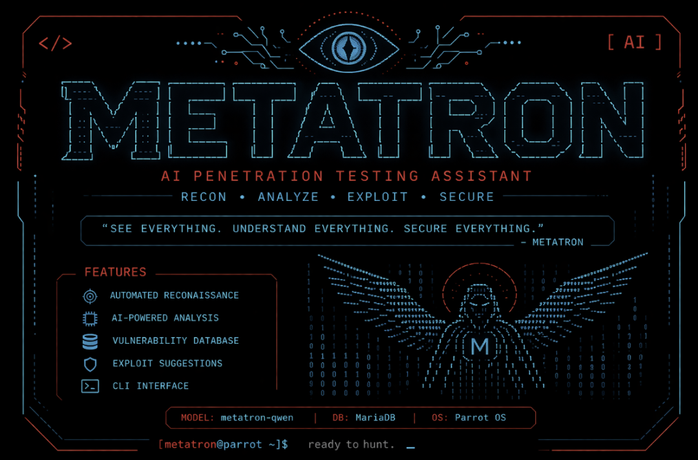
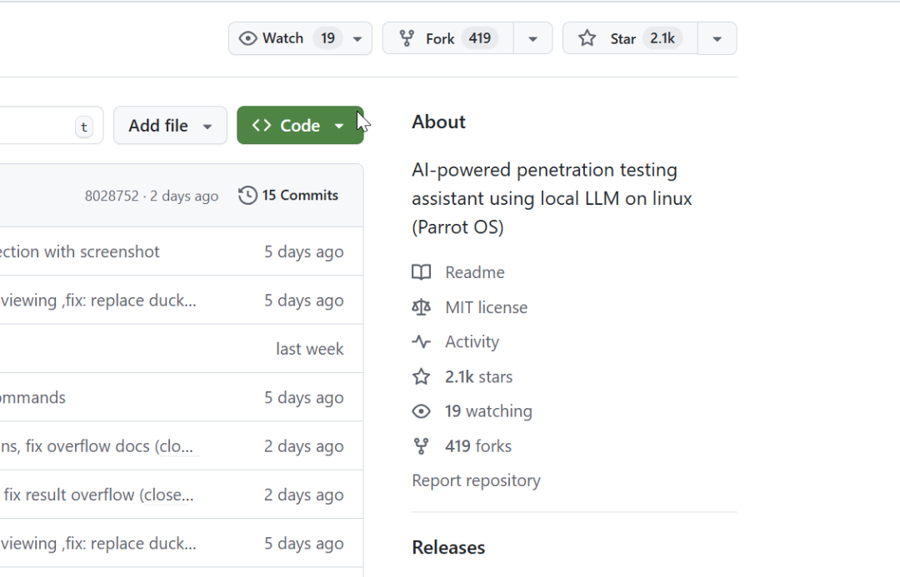
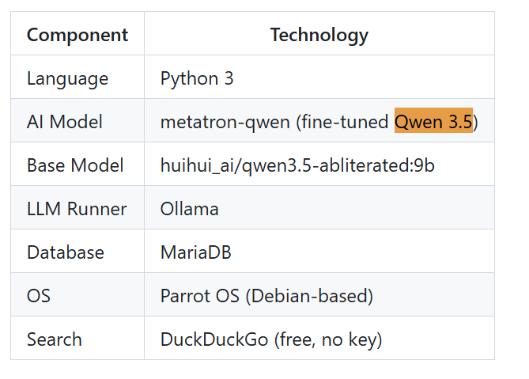
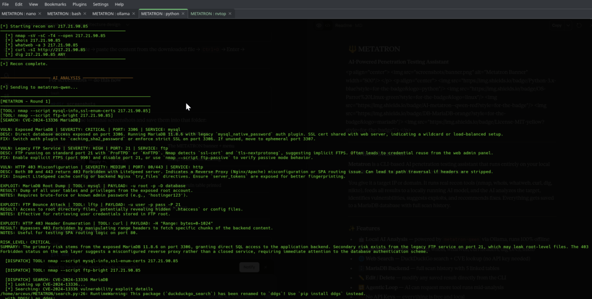
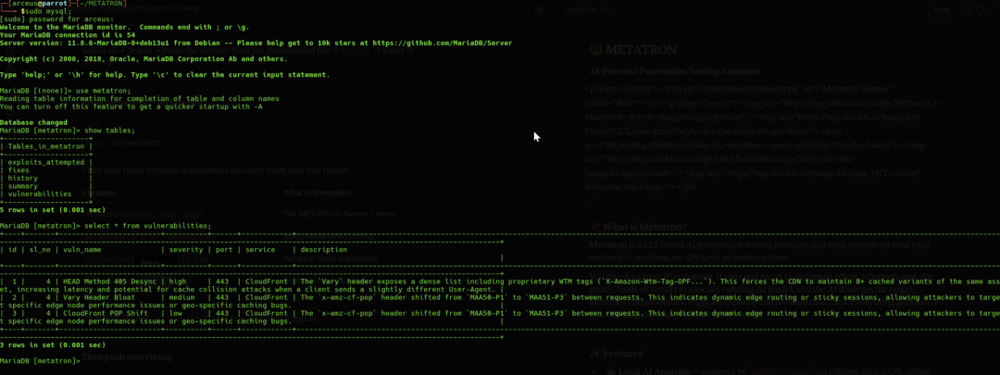
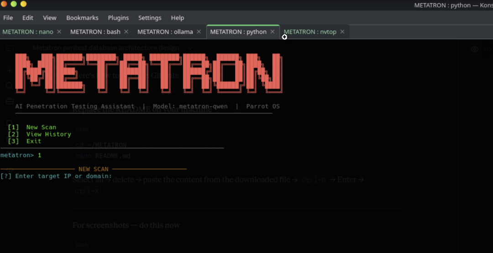
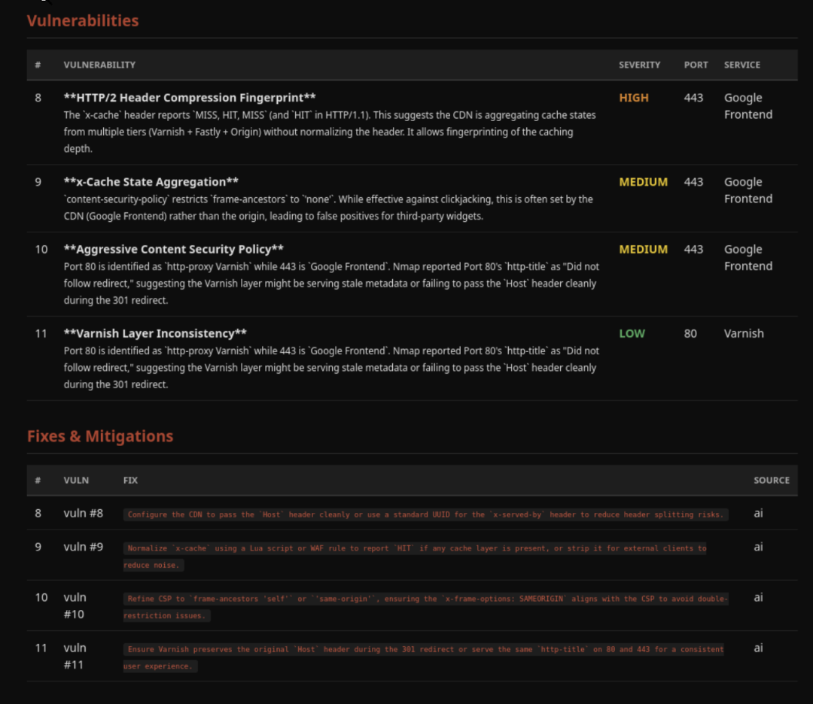

做渗透测试的人都知道一个尴尬的现实。
你手里的工具越来越智能，但也越来越不"安全"。
日常跑个 nmap、扫个端口、查个漏洞，这些操作本身没问题。但当你把扫描结果丢某个公开AI让它帮你找问题的时候，里面的目标 IP、开放端口、服务版本、甚至潜在漏洞信息，其实已经泄露了。
对于安全从业者来说，这个风险得注意。
最近在 GitHub 上看到一个叫 「METATRON」 的项目，是一个学生用 8 天时间做出来的。

一句话概括，它是AI 驱动的渗透测试助手，100% 本地运行，没有数据外泄。
你给它一个目标 IP 或域名，它会自动运行 nmap、whois、whatweb、curl、dig 这些侦察工具，然后把所有结果喂给本地运行的 LLM（通过 Ollama），让 AI 帮你分析漏洞、建议利用方式、给出修复方案，最后把所有数据存到 MariaDB 数据库里。
没有云端 API，没有订阅费用，没有数据能离开你的电脑。
作者 sooryathejas 是个学生开发者。它已经拿到了 「2100多 个 Star」 。

它解决了一个行业痛点。
当所有 AI 安全工具都在要 API Key、都在把你的数据传到云端时，这个项目选择了另一条路。
市面上不缺 AI 渗透测试工具。但它们有个共同点：需要连接云端 LLM，需要 API Key，需要付费订阅。
METATRON 的思路完全不同。
它用的是 Ollama 跑本地的 Qwen 3.5 模型（9b 版本），所有的推理都在你自己的机器上完成。

这意味着目标IP不会离开你的网络。扫描结果不会被第三方存下来。漏洞信息也不会进任何云服务的日志。
对要做合规测试、红队评估，或者特别在意数据敏感的人来说，这才是真刚需。
有一个功能我觉得最值得重点说说。
大多数AI安全工具的流程是：你跑完扫描 → 导出结果 → 粘贴给AI → 让它分析。AI在这整个过程里只是个被动的“阅读者”。

METATRON有个叫 「Agentic Loop」 的机制：AI在分析的时候，如果觉得信息不够，会主动要求跑更多工具。
比如它看完nmap结果，发现某个端口的服务版本很可疑，就能自己要求再跑一次whatweb或者nikto，拿到新数据后再继续分析。
这不是简单的自动化，而是让AI有了主动侦查的能力。
再往下看，它的数据库设计也很关键。
METATRON把每次扫描结果都存在MariaDB里，用了五张表来关联存储：
「history」：扫描会话主记录，里面会存储目标、时间、用的工具列表等信息。 「vulnerabilities」：发现的漏洞, 包括名称、严重程度、端口、服务等信息。 「fixes」：修复建议，跟漏洞关联。 「exploits_attempted」：利用尝试记录，包括payload、结果等信息。 「summary」：AI分析摘要，包括风险等级、总体评估。
这样你随时可以回溯历史扫描，对比不同时间的漏洞变化，还能直接导出PDF或HTML的专业报告。
` 
另外两个细节我觉得挺加分。
一个是工具链开箱即用。
以前要做类似的事情，你得自己写脚本调用 nmap、自己解析输出、自己拼 prompt、自己处理 LLM 返回的 JSON。就像自己搭脚手架，费时费力。
METATRON 把这些全包了。就像拿到现成的工具箱，打开就能用。
它内置了六个常用侦察工具：nmap（端口扫描）、whois（域名查询）、whatweb（Web 指纹）、curl（HTTP 头）、dig（DNS 记录）、nikto（Web 漏洞扫描）。你可以选择全部运行，也可以跳过 nikto（因为它比较慢）。
工具跑完后，结果会被自动整理成结构化的格式，再转换成适合 LLM 分析的 prompt。整个过程你只需要输入目标地址，剩下的交给它。
另一个是真正免费，没有任何隐藏成本。
它不需要 OpenAI API Key，不需要 Anthropic 账号，不需要按 token 付费。你只需要一台能跑 Ollama 的机器（最低 8.4 GB RAM），就能无限次使用。
这才是真香。
模型用的是 huihui_ai/qwen3.5-abliterated:9b，这是一个经过优化的 Qwen 3.5 变体，专门为安全分析场景调整过。如果你的机器配置不够，还可以换 4b 版本，对 RAM 的要求会更低。
说了这么多，想装的话门槛不算高。
先装好系统依赖，nmap、whois 这些侦察工具得有。然后装 Ollama 并下载模型，这一步稍微费点时间，9b 模型大概要下几个 GB。接着克隆代码、创建虚拟环境、装 Python 依赖。最后别忘了配 MariaDB 数据库，项目文档里有建表的 SQL。
先把代码下载到本地。
git clone https://github.com/sooryathejas/METATRON.git
在命令行用ollama运行metatron-qwen模型。
ollama run metatron-qwen
然后直接启动METATRON。
cd ~/METATRON
source venv/bin/activate
python metatron.py
启动后输入目标 IP 或域名，选择要运行的工具，等它跑完就能看到 AI 的分析结果了。

需要注意的是，目前只支持 Linux。官方推荐 Parrot OS，其他 Debian 系的发行版应该也能跑，但 Windows 和 macOS 目前不支持。
硬件门槛稍微高一点，不过目前大部分个人电脑都能跑。9b 模型需要至少 8.4 GB RAM，如果你电脑配置一般，可能得用 4b 版本凑合。

最后说两句
METATRON 不是那种"颠覆一切"的工具，它更像是一个信号：「本地 LLM 已经成熟到可以支撑真正的安全工作流了」。
如果你是做渗透测试、红队评估、或者需要对目标系统进行安全分析的，这个项目值得试试。即使不完全替代你现有的工具链，它的本地化思路和 Agentic Loop 设计也值得参考。
如果你只是好奇或者想学习，它的代码结构清晰，文档也算完整，是个了解"AI + 安全工具"怎么结合的好案例。
开源地址：https://github.com/sooryathejas/METATRON
既然看到这了，欢迎随手点赞，再看，转发，也可以给我个星标⭐，接收最新的文章，我们下期见！